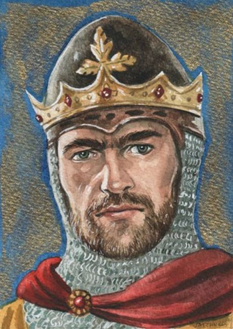
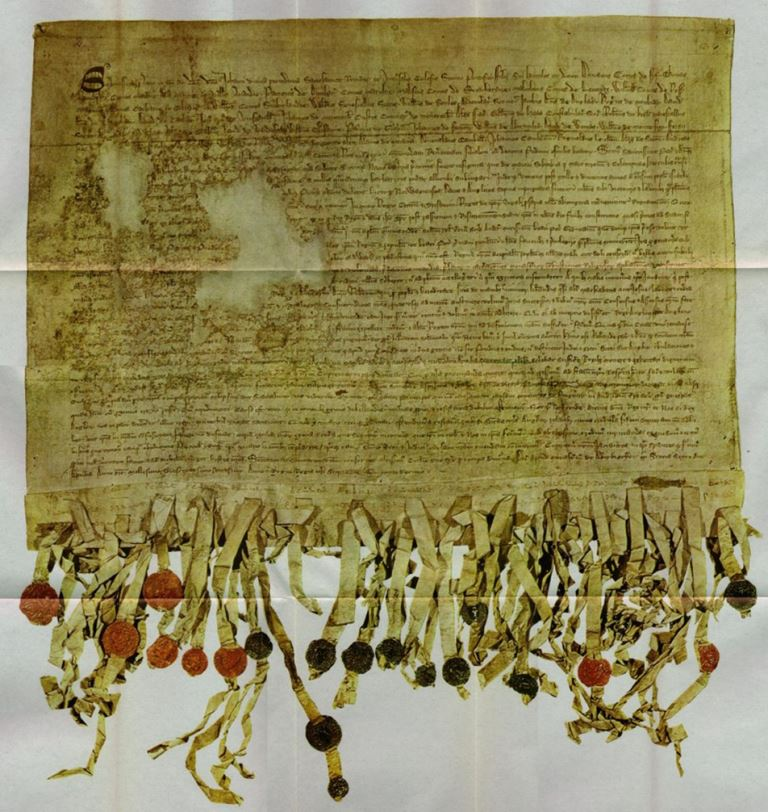
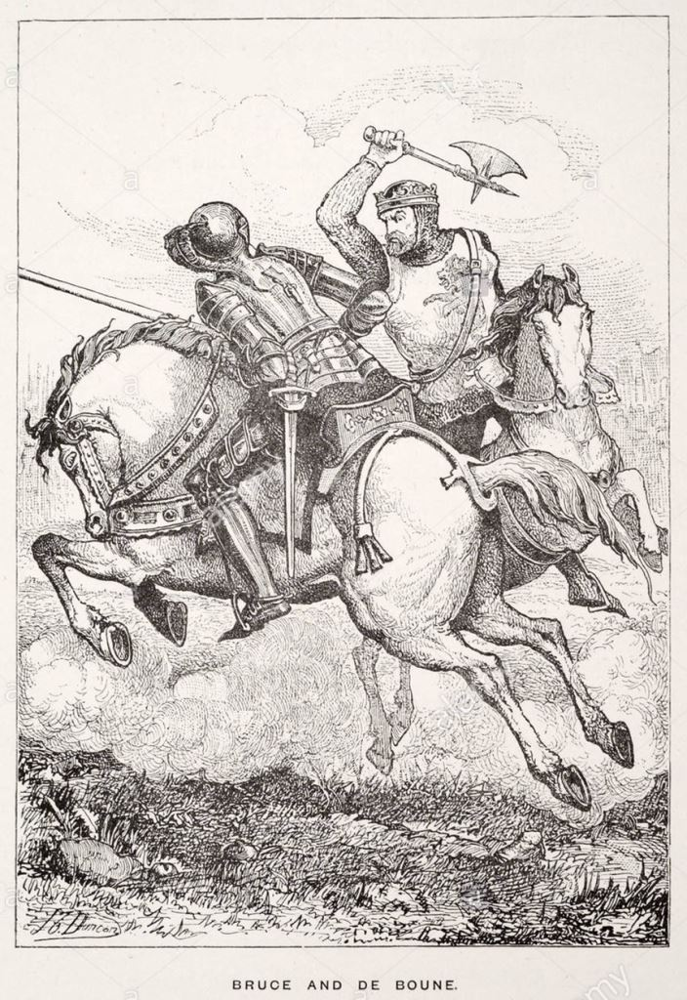
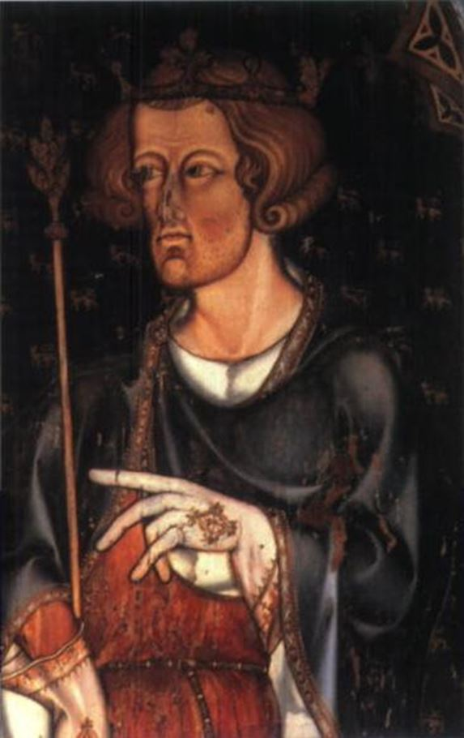

« Tant que cent de nous resteront en vie, jamais sous aucunes conditions nous nous soumettrons au joug anglais. Ce n'est pas pour la gloire, ni pour la richesse, ni pour les honneurs que nous nous battons, mais pour la liberté — uniquement pour elle, qu'aucun homme honnête ne cède, ne fusse qu'au prix de sa propre vie. »
Dans une lettre des barons d'Écosse, dont l'ébauche a été rédigée par Bernard de Linton, chancelier d'Écosse et abbé du monastère d'Arbroath, envoyée le 6 avril 1320 au pape Jean XXII, il est écrit : « De considérer qu'avec lui, dont vous êtes le vicaire sur terre, il n'y a pas de préférence ni de distinction entre un Juif et un Grec, ou entre un Écossais et un Anglais ». Les Juifs de l'Écosse au Moyen Âge n'étaient ni discriminés ni persécutés, contrairement à ceux qui vivaient en Angleterre.
Ce document historique très ancien, rédigé en latin, est d'une très grande importance pour les nations qui aujourd'hui luttent pour leur indépendance et leur survie face au mondialisme. Cette déclaration avant-gardiste a inspiré les révolutionnaires américains, lorsqu'ils ont rédigé la déclaration d'indépendance des États-Unis du 4 juillet 1776.
La notion de nation n'existait pas au Moyen Âge, elle a vu le jour lors de la Révolution Française. On peut sans l'ombre d'un doute affirmer que la Déclaration d'Arbroath contient le germe du concept de nation. À l'époque de Jeanne d'Arc, là aussi l'idée de nation commençait à germer dans le cœur et l'esprit des Français.
Robert de Brus(1274-1329), roi des Écossais de 1306 à 1329, a été la figure de proue de l'indépendance de l'Écosse au Moyen Âge. Ce dirigeant charismatique, qui a su insufflé au peuple écossais la flamme de la conscience nationale, demeure un phare pour notre époque troublée, où l'existence même de la nation est sauvagement attaquée par l'oligarchie financière mondiale.
Le noble document contient les idées suivantes :
1. Le concept de nation et de sa souveraineté
2. Le pouvoir émane du peuple et de son consentement
3. La notion de non-discrimination
4. Le droit du peuple de révoquer un souverain indigne.
Il faut souligner que même aujourd'hui en France et au Canada, le peuple ne peut révoquer un dirigeant indigne ou même un simple député n'accomplissant pas son devoir, le droit de révocation n'existe tout simplement pas.
Il faut souligner qu'avant la déclaration d'Arbroath du 6 avril 1320, l'Écosse avait obtenu son indépendance de facto, sur le champ de bataille, notamment par la victoire écrasante à la bataille de Bannockburn, le 23-24 juin 1314, où l'infanterie écossaise, armée de piques, sous le commandement du roi Robert de Brus, avait dévasté la fière cavalerie anglaise. Cette lettre envoyée au pape Jean XXII, n'était qu'une démarche diplomatique pour gagner l'appui de la papauté à la cause écossaise, l'église locale écossaise supportait déjà le peuple écossais.
Le cœur du roi Robert de Brus repose en paix, dans l'abbaye de Melrose, en terre d'Écosse mais il bat très fort dans le cœur des Patriotes du monde entier, qui défendent leur terre, leurs familles, leur nation contre l'agression de la perfide oligarchie financière mondialiste.
Voici donc la déclaration complète d'Arbroath du 6 avril 1320 :
LA DÉCLARATION D'INDÉPENDANCE DE L'ÉCOSSE DU 6 AVRIL 1320
À Son Très Saint Père et Seigneur dans le Christ, le Baron John, par divine providence, Pontife Suprême de la Sainte Romaine et Universelle Église, ses humbles et dévoués fils, Duncan, Comte de Fife, Thomas Randolph, Comte de Moray, Baron de Man et d’Annandale, Patrick Dunbar, Comte de March, Malise, Comte de Strathearn, Malcolm, Comte de Lennox, William, Comte de Ross, Magnus, Comte de Caithness et d’Orkney, et William, Comte de Sutherland; Walter, Intendant d’Écosse, William Soules, Sommelier d’Écosse, James, Baron de Douglas, Roger Mowbray, David, Baron de Brechin, David Graham, Ingram Umfraville, John Menteith, Gardien du Comté de Menteith, Alexander Fraser, Gilbert Hay, Constable d’Écosse, Robert Keith, Maréchal d’Écosse, Henry St-Clair, John Graham, David Lindsay, William Oliphant, Patrick Graham, John Fenton, William Abernethy, David Wemys, William Mushet, Fergus d’Androssan, Eustace Maxwell, William Ramsay, William Mowat, Alan Murray, Donald Campbell, John Cameron, Reginald Cheyne, Alexander Seton, Andrew Leslie, et Alexander Straiton, autres barons et propriétaires fonciers ainsi que toute la communauté du royaume d’Écosse s’inclinent tous en de pieux baisers à ses pieds bénis.
Très Saint Père et Seigneur, nous savons, et d’après les chroniques et livres des Anciens, nous découvrons parmi les autres célèbres nations, que la nôtre, les Scots, avons bénéficié d’une grande renommée. Ils voyagèrent de la Grande Scythia par la Mer Tyrrhénienne et de par les Piliers d’Hercule, et demeurèrent longtemps en Espagne parmi les plus sauvages tribus, mais nulle part ils n’ont pu être soumis par aucunes races, aussi barbares soient-elles. De là ils arrivèrent, douze mille ans après que le peuple d’Israël a traversé la Mer Rouge, jusqu’à leur terre dans l’Ouest, là où ils vivent toujours aujourd’hui. Les Britons qui furent les premiers à partir, les Pictes qu’ils ont entièrement anéantis, et, même alors qu’ils étaient souvent assaillis par les Norvégiens, les Danois et les Anglais, ils prirent possession de cette terre avec beaucoup de victoires et d’efforts inouïs; et, comme le témoigne les historiens des temps jadis, ils ont su rester libres de toutes obligations depuis. Dans leur royaume a régné cent et treize rois de leur propre souche, la ligne ne fut jamais brisée par aucun étranger.
Les grandes qualités et mérites de ces peuples, qu’ils n’ont d’ailleurs pas manifestés, gagnent assez de gloire dans ce fait; que le Roi des Rois et Seigneurs des Seigneurs, notre Seigneur Jésus-Christ, après sa Passion et Résurrection, les appela, même alors installés dans les parties les plus reculées de la terre, presque le premier à Sa plus sainte foi. Non pas qu’Il les aurait confirmés dans leur foi par presque n’importe qui mais par le premier de ses apôtres – en l’appelant, bien qu’en second et troisième rang – le plus aimable Saint-André, le Frère Béni de Pierre, et a désiré qu’il les garde sous sa protection comme leur patron pour l’éternité.
Les Très Saints Pères, vos prédécesseurs, prodiguèrent une soigneuse attention à ces choses et obtinrent plusieurs faveurs et nombreux privilèges pour ce même royaume et peuple, étant sous la responsabilité spéciale du Frère Béni de Pierre. Alors notre nation sous leur protection a, en effet, vécu en toute liberté et en paix jusqu’à l’époque où ce puissant Prince, le Roi des Anglais, Édouard, le père de celui qui règne aujourd’hui quand notre royaume n’avait plus de dirigeant et que notre peuple arborait aucune malice ou tricherie, et était alors non-habitué aux guerres et aux invasions. II se présenta sous le déguisement d’un ami et se mit à les harceler comme ennemi. Les actes de cruauté, de massacre, de violence, de pillage, d’incendie, d’emprisonnement de prélats, brûlant monastères, volant et tuant les moines et religieuses, et encore d’autres outrages incalculables lesquelles commis contre notre peuple, n’épargnant personne que ce soit en raison de l’âge ni sexe, religion ni rang, personne ne peut décrire ni même complètement imaginé à moins de l’avoir vu de ses propres yeux.
Mais venant de ces innombrables démons, nous sommes restés libres, avec l’aide de Celui Qui soulage et guérit les affligés, par notre infatigable Prince, Roi et Seigneur, le Baron Robert. Lui, que son peuple et son héritage puissent être délivrés des mains de nos ennemis, rencontre labeur et fatigue, faim et péril, comme un autre macchabée ou Josué et les soutiennent. Lui, aussi, divine providence, détient son droit de succession conformément à nos lois et coutumes lesquelles nous devrions conserver jusqu’à la mort, et par notre droit de consentement et de reconnaissance, l’avons fait notre Prince et Roi. À lui, comme aux hommes par qui le Salut a été façonné à notre peuple, nous sommes tenus par la loi et par ses mérites que notre liberté ait pu être maintenue, et par lui, comme il convient, nous désirons qu’elle soit maintenue.
Encore s’il devait abandonner ce qu’il avait commencé, et accepte de faire de nous des sujets du royaume d’Angleterre ou des Anglais, nous devrions nous déployer sur-le-champ afin de le conduire comme notre ennemi et destructeur de ses propres droits et des nôtres, et faire notre Roi d’un autre homme, plus apte à nous défendre; pour aussi longtemps qu’une centaine d’entre nous restent vivants, jamais sous aucunes conditions, nous serons amenés sous la gouverne anglaise. Il est vrai, que nous combattons non pas pour la gloire, ni les richesses, ni les honneurs, mais pour la liberté – pour cette unique raison, laquelle aucun honnête homme n’abandonnera, même au péril de sa vie.
Cependant il est, Révérend Père et Seigneur, que nous implorons votre Sainteté avec nos plus sincères prières et nos suppliques, attendu que vous considérerez tout ceci avec votre sincérité et bonté, dont vous êtes le vice-régent sur terre. Il y a aucune distinction entre le Juif et le Grec, l’Écossais ou l’Anglais, vous regarderez avec les yeux d’un père, les problèmes et la privation que l’Anglais impose à notre peuple et à l’Église de Dieu. Qu’il vous plaise de réprimander ou d’exhorter le Roi des Anglais. Il devra être satisfait avec ce qu’il lui appartient, l’Angleterre telle qu’elle est a suffi à sept rois et plus. Il devra laisser les Écossais en paix, qu’il accepte qu’ils vivent dans cette pauvre Écosse, sous laquelle il ne possède aucune résidence, et ne convoite rien de ce qui nous appartient. Nous désirons sincèrement ne rien lui devoir, en regard à notre condition, que nous pouvons, gagner la paix pour nous-mêmes.
Ceci vous concerne vraiment, Saint Père, depuis que vous avez vu la rage enflammée de cette sauvagerie envers les Chrétiens, comme étant le péché des Chrétiens – qu’ils ont en effet mérité – et vu les frontières de la Chrétienté refoulées chaque jour vers l’intérieur; et combien cela ternira votre Sainte mémoire d’être témoin si (laquelle Dieu défend) l’Église souffre le scandale peu importe sa provenance. Alors s’éveilleront les princes Chrétiens qui, pour de fausses raisons, prétendent qu’ils ne peuvent aider la Terre Sainte en raison des guerres qu’ils ont sur les bras avec leurs voisins. La véritable raison qui les empêche est qu’ils réalisent que faire la guerre avec leurs petits voisins leur rapportent de rapides profits et une faible résistance. Mais comment nous et notre Seigneur le Roi irions-nous aussi là-bas, si le Roi des Anglais ne nous laisse en paix. Dieu connaît tout et voit tout; et nous vous le professons et vous le déclarons en tant que Vicaire du Christ et de toute la Chrétienté.
Mais si votre Sainteté met trop de foi dans l’histoire que raconte l’Anglais et n’accorde pas le crédit à tout ceci, ni refrain les favorisant à notre préjudice, alors le massacre des corps, la perdition des âmes, et toutes autres malchances qui s’en suivront, nous étant infligés par eux, et l’inverse, nous croyons, que le Tout-Puissant vous en demandera des comptes.
Pour conclure, nous sommes et seront toujours, aussi longtemps que le devoir nous appelle, prêts à faire votre volonté en tout, comme des fils obéissants à Son Vicaire; et à Lui comme Roi Suprême et Juge nous nous engageons dans le maintien de notre cause, se déchargeant de nos soucis sur Lui et fermement confiants qu’Il nous inspirera courage et amènera nos ennemis à ne rien tenter.
Que le Tout-Puissant vous préserve en sainteté et en santé dans sa Sainte Église et vous gratifie d’une longue vie.
Signé au monastère d’Arbroath en Écosse ce sixième jour du mois d’avril de l’année de grâce treize cent et vingt et quinzième année de règne de notre Roi sus-nommé.
Partager cette page